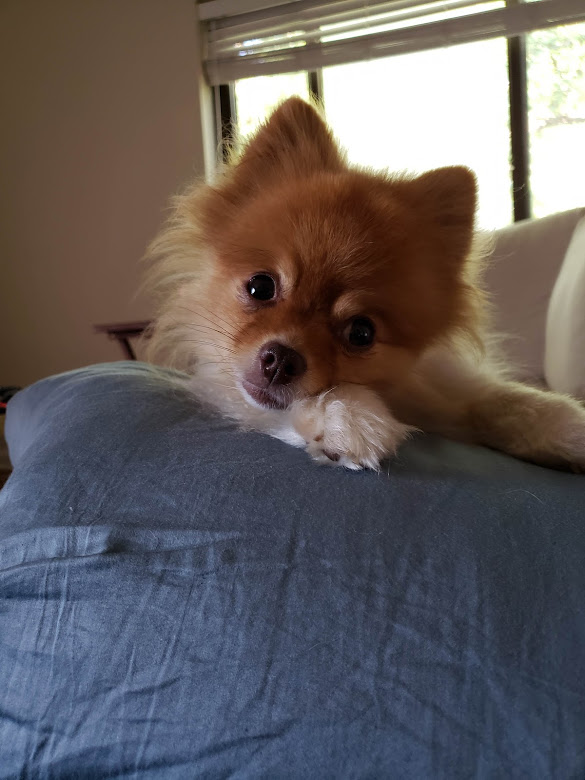

"I decided to adopt a dog a few years ago. I wanted to get a rescue dog so I started searching for local rescue groups. I found a place called Stray Rescue of St. Louis. I went to their website and immediately fell in love with a 4 month old pomeranian who would soon come to be known as Bear Bear."
“My wife and I scheduled an appointment to go see him the following week. We were both immediately in love. He was only 3 pounds at the time and all he wanted to do was play and cuddle. We took him home that day.”
“Unfortunately, the next day disaster struck! Bear Bear jumped off the couch to go get one of his toys and immediately started crying. I scooped him up and it was clear that he had hurt his leg. I rushed him to the vet where it was determined that he had broken his leg. I learned that when young, Pomeranians front leg bones are about as thin as a toothpick and are extremely brittle.”
“Bear had a cast put on and had to learn to adjust to walking with a big cast on his leg which was both sad and cute. Soon he was able to run at almost full speed while wearing the cast. The “thunk, thunk, thunk” sound of him walking on the hardwood floors soon became a normal noise in our household.”
“After many checkups, Bear Bear was finally able to have the cast removed 6 months later. His leg was a s good as new and he hasnt had any troubles since. He is a very good dog who is always in good spirits and loves spending time with his family and his (many) toys.”
